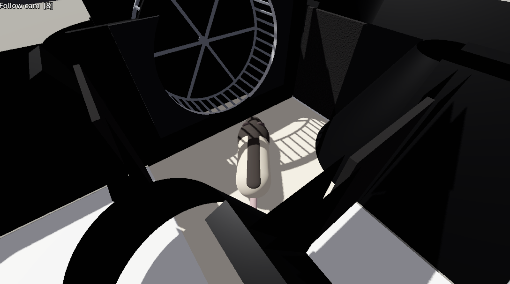

RatTADStask
A simulation for playing the three-arm delayed sequence task.
Desktop ↗ Mobile · in development ↗

What it is
A playable 3D model of the three-arm delayed sequence (TADS) maze that my rats run. You play as the rat: run on the wheel until the doors open, choose an arm, and learn the sequence rule the same way the rats do, with water as the only feedback.
How to play
On a laptop: click the game once to start, then press H at any time to see every control. Move with WASD or the arrow keys and turn with the mouse. Space hops into or out of the wheel, W runs it, and F or a click licks.
Three cameras: the rat's eye, a third-person camera behind the rat, and an overhead view. C switches the big view between them; 8 shows or hides the third-person view in a side panel, and 9 does the same for the overhead.
On a phone: hold it sideways. Left thumb stick to walk and turn, drag on the right to look. Next to the wheel, tap Hop in, then hold the stick forward to run; tap Lick at a port. The phone version is still in development.
Real rat vs. simulation
The same left-to-centre trial, real and simulated, in sync. On the left, a real rat seen from overhead (from the paper's supplementary video, 1× speed). Next to it, the virtual rat replaying that exact path in RatTADStask: I tracked the real rat frame by frame and drove the simulated one along the same route, through the wheel and up the centre arm. Press play to also see what only the simulation can show: the rat's own view and a camera following it.
How it works
Built in the Godot game engine. The maze, doors, running wheel, laser beam-breaks, and water ports follow the real apparatus, and the task runs on the same lap logic: the wheel criterion opens all three doors, entering an arm commits the choice, and the reward follows the sequence rule. Views include the rat's eye, a follow camera, and an overhead map. It also has a self-playing demo mode, and Mac and Windows builds.
Links
- Play it on a laptop or desktop (keyboard and mouse)
- Phone / touchscreen version (in development; part of Task Sims)
- Web build on GitHub